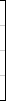

<style>
v\:*{behavior:url(#default#VML);position:absolute;}
div,td {font-size:12px;}
.gra{BACKGROUND-color: #CEDBFF ;font-size:1px;BORDER-bottom: #000000 1px solid;} 
.gra2{BACKGROUND-color: #003399;font-size:1px;BORDER-bottom: #000000 1px solid;} 
</style>
<SCRIPT language="JavaScript">
<!--
var d=new Array();    // 统计数据数组
var d_ip_max=0;       // 最大IP数
var d_pv_max=0;       // 最大PV数
var d_ip_all=0;       // IP总数
var d_pv_all=0;       // PV总数
var title_all="";     // 统计图标题
var title_ip="";      // IP数据标题
var title_pv="";      // PV数据标题
var b_w=0;            // 柱状图柱宽
var b_s_w=0;          // 柱状图间隔
function init_data(v) // 初始化数据
{
	d=new Array();
	d_ip_max=0;
	d_pv_max=0;
	d_ip_all=0;
	d_pv_all=0;
	var di=v.split(";");   // 先通过;来分割
	var di0,di1,di2;
	d[0]=di[0].split(","); // 通过,来分割
	title_all=d[0][0];    // 此实例中显示本周访问统计(详细请看div中的data数据)
	title_ip=d[0][1];     // 此实例中显示访问IP
	title_pv=d[0][2];     // 此实例中显示访问量
	b_w=Math.floor(d[0][3]);    // 柱状图柱为20
	b_s_w=Math.floor(d[0][4]);  // 柱状图间隔为25
	for(var i=1;i<di.length;i++)
	{
		d[i]=di[i].split(",");    // 通过,来分割得出数据
		di0=Math.floor(d[i][0]);  // 得出星期几
		di1=Math.floor(d[i][1]);  // 访问IP
		di2=Math.floor(d[i][2]);  // 访问量
		d_ip_all+=di1;	          // 访问IP总量
		d_pv_all+=di2;	          // 访问总量
		d_ip_max=d_ip_all;
		d_pv_max=d_pv_all;
	}
}
function draw_bar(sa)  // 画柱状图
{
	var sa_div=document.getElementsByName("sa")[sa];
	var v=sa_div.data;             // 获得data中的数据
	init_data(v);
	var b_d1="";
	var b_d2="";
	var title="";
	var b='<div align="center">'+title_all+' (柱状图)</div><table border="0" cellpadding="0" cellspacing="0" align="center"><tr><td valign="top" rowspan="2"><p align="right" style="line-height: 12px; margin-right: 2">';
	for(var i=1;i<d.length;i++)
	{	
		title=''+title_pv+':'+d[i][2]+' '+Math.floor(d[i][2]/d_pv_all*1000)/10+'%\n'+title_ip+':'+d[i][1]+' '+Math.floor(d[i][1]/d_ip_all*1000)/10+'%';
		b_d1+='<td align="center" valign="bottom" width="'+(b_w+b_s_w)+'" background="tu_back.gif" title="'+title+'"><div class="gra2" style="width:'+b_w+';height:'+d[i][2]/d_pv_max*100+'"><div class="gra" style="width:'+b_w+';border:0px;height:'+((d[i][2]-d[i][1])/d_pv_max)*100+'"></div></div></td>';
		b_d2+='<td width='+(b_w+b_s_w)+' title="'+title+'" id="x_'+sa+'_'+i+'">'+d[i][0]+'</td>';
	}
	var d_per=d_pv_max%4==0?d_pv_max/4:Math.floor(d_pv_max/4+1);    
// 计算出Y轴按照4段分割显示数据的值
	for(var i=4;i>0;i--) b+=d_per*i+'<br><br>';           // 循环出Y轴的数据
	b+='0</p></td>';
	b+='<td width="10" valign="top"></td>';
	b+=b_d1;
	b+='<td width="10" valign="top"></td></tr><tr height="20" align="center" style="letter-spacing:-2;font-family:Arial;font-size:12px"><td></td>';
	b+=b_d2;
	b+='<td></td></tr></table><div align="center"><span class="gra2" style="height:10px;width:'+b_w+';border:#000000 1px solid;"></span>&nbsp;'+title_ip+' '+d_ip_all+'&nbsp;&nbsp;<span class="gra" style="height:10;width:'+b_w+';border:#000000 1px solid;"></span>&nbsp;'+title_pv+' '+d_pv_all+'</div>';
	sa_div.innerHTML=b;
}
function draw_pic()       // 画统计图
{
	var sa_obj=document.getElementsByName("sa");        // 获取统计图的数量
	for(var i=0;i<sa_obj.length;i++) draw_bar(i);	    // 循环显示
}
//-->
</script>
<body onload="draw_pic();">
<table width="98%" border="0" align="center" cellpadding="0" cellspacing="0">
  <tr>
    <td>
      <table width="100%" border="0" align="center" cellpadding="1" cellspacing="1" style="border-collapse: collapse">		
        <tr align="center">
          <td width="100%" class="back_font">
		  <div id="sa" data="本周访问统计,访问IP,访问量,20,25;星期日,103,455;星期一,321,552;星期二,70,478;星期三,53,140;星期四,90,312;星期五,73,295;星期六,521,602"></div>
          </td>
        </tr>
      </table>
      </td> 
  </tr>
</table>
</body>
